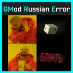

GMod Russian Error
- Downloads
- 692
- Favourites
- 0
Description:
Hello, THE CITY residents.
You know, I was tired of the usual dog cube in THE CITY, and I remembered about the famous mod for Garry’s, which changed the ordinary model “Error” to an excellent russian word that expressed more emotions when this model appeared.
Now you have the opportunity to catch not Doge cubes, but downright “BL*AT”. You will especially like this mod if you are a regular in making mods.
I’m not author of this idea and concept, but I personally modeled it myself, baked it with high poly because it would have been too easy to stuff raw low poly.
So now you can catch a wider range of emotions if you made a mod and messed up somewhere.
Isn’t compatible with SamSWAT’s mod The Rock, because it replaces the same thing.
Installation:
Drop the R41-Alpha-LikeWeapons into your “SPT/user/mods”.
Screnshots(Examples):
Credits:
AuthorResourcesSoulF27Idea, realization in GMOD
R41NB0W_D4SHModeling, realization in EFT
Version